Design principle for separating a computer program into distinct sections, such that each section addresses a separate concern
Models are usually plain JavaScript objects
Views are usually implemented using
some sort of HTML template system
Controllers contain view related logic
tightly coupled with Views
React uses
Components to separate concerns,
written with the full power of JavaScript.
In React everything is a Component!
React is all about
building components, not templates
They split the UI into independent reusable pieces

Components are reusable, composable, maintainable, testable and know how to render themselves into the DOM
Just like regular functions, React components can be composed together
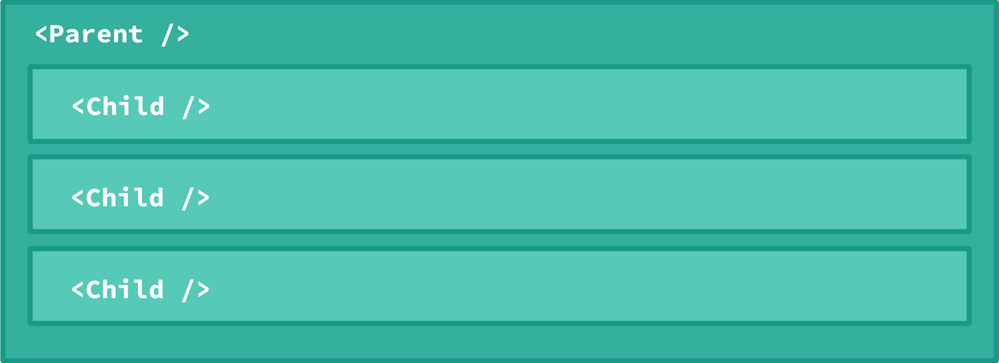 This principle is a key feature of React and present at the core of how react applications are developed
// Imperative jQuery code
// to create a header section
function createHeaderSection(text) {
let element = $('<div/>');
let header = $('<h1/>');
header.text(text);
element.append(header);
return element;
}
// Declarative React code to
// create a header section component
function HeaderBlock(props) {
return (
<div>
<h1>{props.text}</h1>
</div>
);
}
React implements one-way reactive data flow
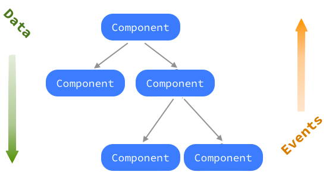One way data flow is deterministic, making it easier to predict and reason about state changes and data flows
Re-render on every state change seems expensive,
but is
fast because it happens on a
Virtual DOM.
On every update the following process takes place:
The DOM is slow, but React is fast!


An extension that allows inspection of React component hierarchy
in the Chrome and Firefox Developer Tools
Static module bundler for modern JavaScript applications
Recursively builds a dependency graph that includes every module in the application and packages them into one or more bundles
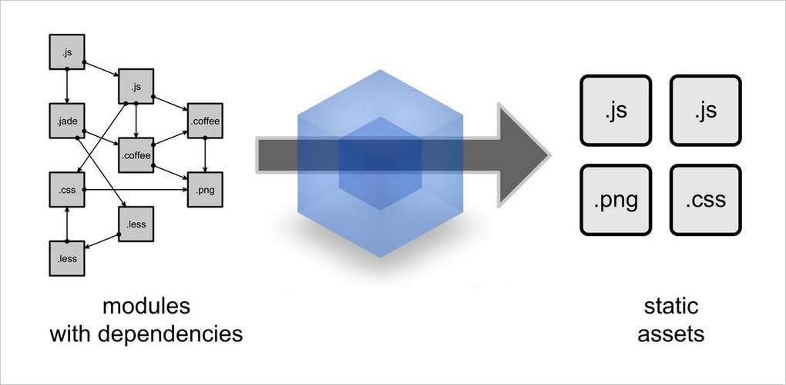Webpack can be configured around four core concepts:
// webpack config uses common.js node modules, not ES6
module.exports = {
entry: './src/index.js',
output: {
filename: 'bundle.js',
path: path.resolve(__dirname, 'dist') // absolute path required
},
// module transformations to apply on files
module: {
// loaders to apply if files match the test regex
rules: [
// css-loader: transform all css files in valid modules
// style-loader: add css to dom
{ test: /\.css$/, use: ['style-loader', 'css-loader'] }
]
},
// plugins to be invoked by webpack
plugins: [new HtmlWebpackPlugin({ template: 'public/index.html' })]
};
Requires plugins to perform transformations on code
{
// webpack config file
module: {
rules: [
// Babel webpack plugin
{ test: /\.(js|jsx)$/, exclude: /node_modules/, loader: "babel-loader" }
]
}
}
Babel presets apply a predefined set of plugins
# react dependencies
$ npm install --save react react-dom
# webpack babel dependencies
$ npm install --save-dev babel-core babel-loader babel-preset-env babel-preset-react
{
// babel config in package.json file
"babel": { "presets": ["env", "react"] }
}
Official CLI for creating react applications with no setup
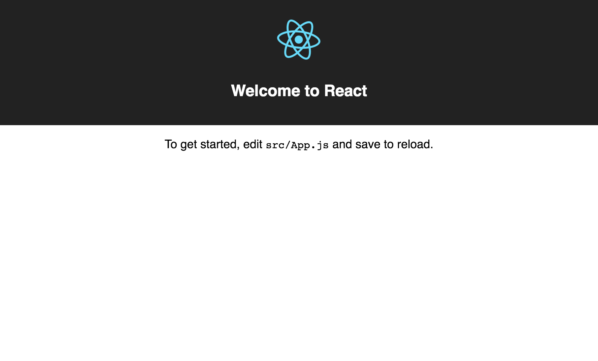
# Execute directly from the NPM registry
$ npx create-react-app my-app
# Run the application in development mode
$ cd my-app
$ npm start
Promise based HTTP client for the browser and Node.js
async function getUser() {
try {
const response = await axios.get('/user?ID=12345');
console.log(response);
} catch (error) {
console.error(error);
}
}
Quite popular on the React community and a
better alternative to fetch
Immutable object
describing what should be rendered to the screen
and containing
two main properties:
{
type: 'div',
props: {
className: 'container',
children: '<Academia de Código_>'
}
}
<div class="container">
<Academia de Código_>
<div>
{
type: Button,
props: {
className: 'ui primary button',
children: 'Login'
}
}
<Button className="ui primary button">
Login
</Button>
A React Component is a
function or a class
which
accepts input properties and
returns a React Element
// Button Component
function Button(props) {
return React.createElement('button', props);
}
React Components can be rendered by calling
ReactDOM.render(Component(), node)
// properties to pass to the Button component
const props = { className: 'ui button primary', children: 'Login' };
// create element from Button component
const element = React.createElement(Button, props);
// render element to the root div
ReactDOM.render(element, document.getElementById('root'));
React Components must act like pure functions with respect to their props and
do not attempt to change them
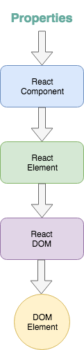
Syntax extension to JavaScript to describe React Elements
Syntactic sugar for React.createElement(component, props, ...children)
// required for jsx
import React from 'react';
const type = 'section';
const element = (
<div className="{type}">
<h1>I am a component!</h1>
<h2>I am a sub title!</h2>
</div>
);
// required for createElement
import React from 'react';
const element = React.createElement('div',
{ className: 'section',
React.createElement('h1', null, 'I am a component!'),
React.createElement('h1', null, 'I am a sub title!')
}
);
Instead of
artificially separating technologies by putting markup and logic in separate files,
The style attribute can be used to style a React component
An object with camelCased properties is used, not strings
// paragraph style object
const pStyle = {
color: 'red'
};
// styled react element
const alertText = <p style={pStyle} />;
// render red paragraph with no CSS
ReactDOM.render(alertText, document.getElementById('root'));
Inline styles are normally used for dynamic computed styles as
CSS classes are generally more efficient
Contain
no state and expressed as a single pure function which
accepts a
props object and
returns a React
element
// Declare the React Welcome Component
function Welcome(props) {
return <h2>Welcome {props.name}</h2>;
}
// Instantiate and render a React Element
ReactDOM.render(<Welcome name="Rui" />, document.getElementById('root'));
// Same as above
const element = Welcome({name: 'Rui'});
ReactDOM.render(element, document.getElementById('root'));
Functional components are stateless and pure, for the same props they always return the same element
React components should start with uppercase (
<Welcome />) to distinguish them from regular DOM tags(
<div />
)
Complex UI does not fit in a single function and needs to
be
abstracted into reusable pieces, hiding implementation details
JSX makes it really easy to compose components together
function ListItem(props) {
return <li>{props.item}</li>;
}
function Popular() {
return (
<ul>
<ListItem item="JavaScript" />
<ListItem item="Java" />
<ListItem item="Ruby" />
</ul>
);
}
ReactDOM.render(<Popular />, document.getElementById('root'));
When a part of the UI is used
several times or is
complex enough on its own,
Wrapper Components can be created using the children property
// compose by passing props down
function PrimaryButton(props) {
return (
<button>
{props.icon}{props.text}
</button>
)
}
// usage:
<PrimaryButton
icon={IconFile} text="Login"
/>
// compose using children
function PrimaryButton(props) {
return (
<button>
{props.children}
<button>
)
}
// usage:
<PrimaryButton>
<IconFile/> Login
</PrimaryButton>
This technique provides a more robust and flexible way of composing than passing props down the component hierarchy
Specially useful when components do not know their children ahead of time,React includes a property typechecking library to help
catching bugs during development
import PropTypes from 'prop-types';
function ListItem({ item , color }) {
return <li style={color: color}>{item}</li>;
}
ListItem.propTypes = {
item: PropTypes.string.isRequired,
color: PropTypes.string
};
// optional properties should have defaults
ListItem.defaultProps = {
color: 'red'
};
prop types and
default values checks are enforced during development but
removed from production code
We can create lists in React using JSX and
plain JavaScript array methods such as
map or
filter
function ListItem({ item }) {
return <li>{item}</li>;
}
function Popular() {
const languages = ['All', 'JavaScript', 'Java', 'HTML', 'CSS', 'C', 'C++'];
return (
<ul>
{ languages.map(lang => <ListItem key={lang} item={lang} />) }
</ul>
);
}
ReactDOM.render(<Popular />, document.getElementById('root'))}
Array items require special unique
key attribute for react to identify items changed, added or removed
Contrary to other JavaScript frameworks, there is no special syntax,
its all JavaScript with JSX sugar on top
A Class component can be created by extending from React.Component
class Popular extends React.Component {
render() {
return (
<ul>
{ languages.map(lang => <ListItem key={lang} item={lang} />) }
</ul>
);
}
}
ReactDOM.render(<Popular />, document.getElementById('root'));
Class components
without state can be transformed in functional components
The Render method needs to act as a pure function, it should only read state and props and render a UI
State allows React components to change their output over time
function ListItem({ item, color }) {
return <li style={{ color }}>{item}</li>;
}
class Popular extends React.Component {
static languages = ['All', 'JavaScript', 'Java', 'HTML', 'CSS', 'C', 'C++'];
state = { selected: 'All' };
selectLanguage(lang) {
this.setState({ selected: lang });
}
render() {
return (
<ul>
{Popular.languages.map(lang => {
let color = lang === this.state.selected ? 'red' : 'black';
return <ListItem color={color} key={lang} item={lang} />;
})}
</ul>
);
}
}
Component state lives in a special
state property, explicitly updated by invoking the
setState() method
Updating the state causes the component to re-render
Updates to the UI are achieved through state updates,
which are
enqueued, batched and delayed by React
class Counter extends React.Component {
state = { value: 0 };
stateUpdateCb() { console.log('New state is ', this.state); }
// new state does not depend on previous state, shallow merge is performed
reset() {
this.setState({ value: 0}, this.stateUpdateCb);
}
// new state depends on previous state, state updater function is recommended
increment() {
this.setState(
prevState => ({ value: prevState.value + 1 }),
this.stateUpdateCb
);
}
render() {
return <h2>{this.state.value}</h2>;
}
}
State updates have to be explicitly triggered through setState(),
it is not possible to update this.state directly
Event handlers receive instances of
SyntheticEvent,
a
cross-browser wrapper around the native events
class Counter extends React.Component {
state = { value: 0 };
stateUpdateCb() { console.log('New state is ', this.state); }
increment = () => {
this.setState(
prevState => ({ value: prevState.value + 1 }),
this.stateUpdateCb
);
};
render() {
return <h2 onClick={this.increment}>{this.state.value}</h2>;
}
}
React events are named using
camelCase and not lowercase like DOM events
SyntheticEvent is reused and all properties nullified for performance, making it unusable in asynchronous
callbacks
Clickable React Counter
Popular Programming Languages Clickable Menu
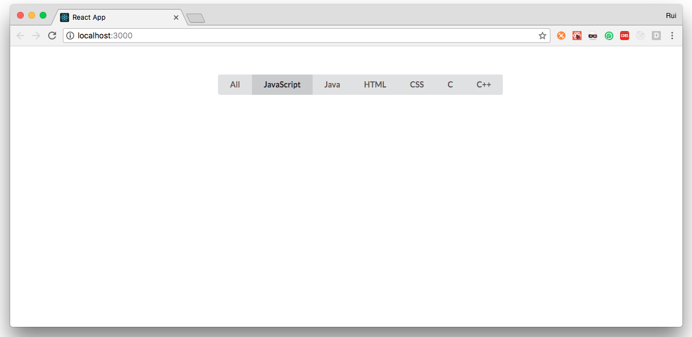React components provide
special methods for
hooking into the component life cycle
Most life cycle methods follow into one of these categories:
Component is instantiated and inserted into the DOM
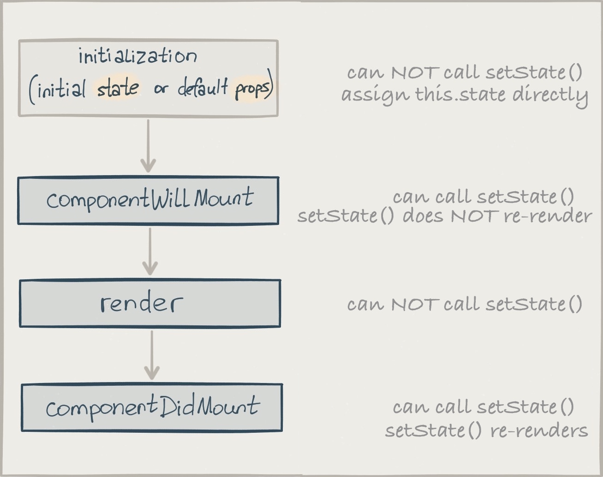
componentDidMount() is the correct place to put any
initialization code
such as starting timers or fetching data using AJAX
Component is being re-rendered due to changes in props or state
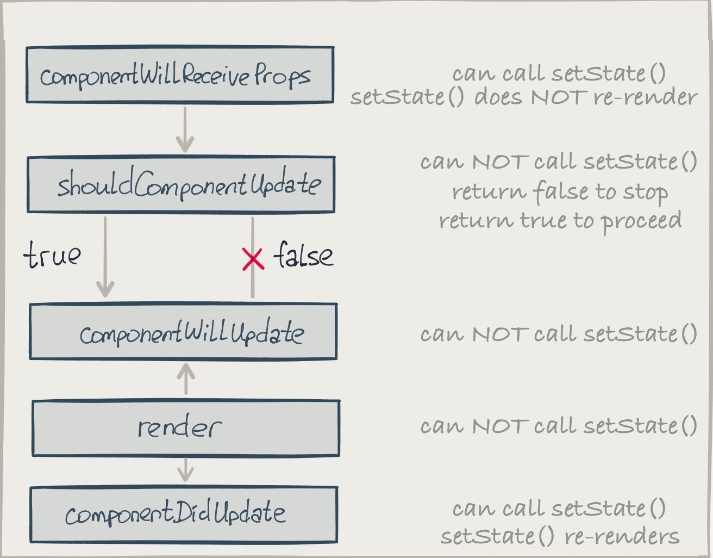shouldComponentUpdate() can prevent unnecessary re-rendering and boost performance
When the rendering process finds a difference in a component
it re-renders the whole subtree
function NothingChanges() {
console.log('Will render one more time...');
return <h3>Nothing changed here...</h3>;
}
class Counter extends React.Component {
state = { value: 0 };
increment = () => {
this.setState(
prevState => ({ value: prevState.value + 1 })
);
};
render() {
return (
<div>
<h2 onClick={this.increment}>{this.state.value}</h2>
<NothingChanges />
</div>
);
}
}
NothingChanges component will be render every time its parent component renders
How do we avoid these
unnecessary re-renders?
Component is being removed from the DOM
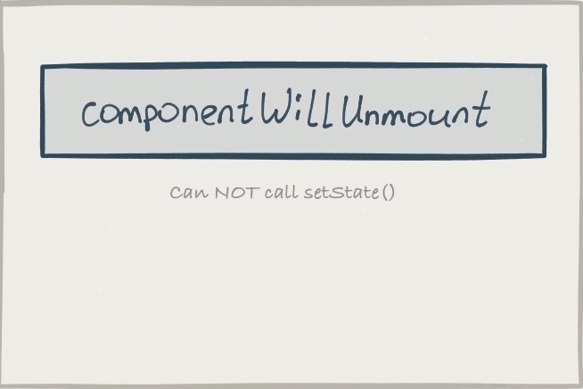componentWillUnmount() is where cleanup code such as invalidating timers and canceling ajax requests should go
Popular Programming Languages on GitHub
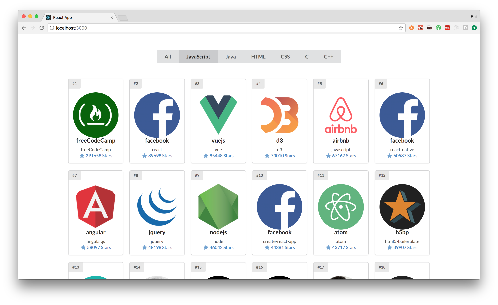HTML form elements such as
input,
textarea or
select,
maintain their state -
user input - in the DOM
React provides two different approaches to form handling:
The browser stores and updates the value for each form input element
Whenever the value is needed it has to be pulled from the field
class Form extends React.Component {
handleSubmit = () => {
const value = this.input.value;
// do something with value
};
render() {
return (
<div>
<input type="text" ref={input => (this.input = input)} />
<button onClick={this.handleSubmit}>Sign Up</button>
</div>
);
}
}
The
ref attribute receives a callback which is called
with a
reference to the DOM node when the component is mounted
The
React way for doing form handling,
where the React state
is the single source of truth
class Form extends React.Component {
state = { text: '' };
handleChange = event => {
this.setState({ text: event.target.value });
};
handleSubmit = () => {
// do something with this.state.text
};
render() {
return (
<div>
<input type="text" value={this.state.text} onChange={this.handleChange} />
<button onClick={this.handleSubmit}>Sign up</button>
</div>
);
}
}
Every state mutation will have an
associated handler function, making it really
easy to modify or validate
user input
Developer Profile on GitHub
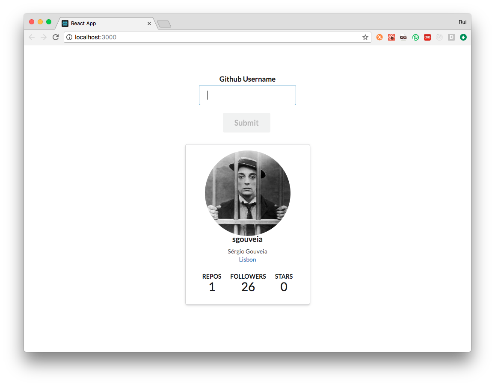Provides a collection of navigational components,
composed declaratively in React applications
Everything is a component in React Router,
which means routing occurs
when the app is rendering
In static routing, routes are declared before rendering takes place,
which is exactly the opposite of React Router
dynamic routing
The Router receives a single child component
which should render the rest of the application
// use the browser based version
import { BrowserRouter } from 'react-router-dom';
ReactDOM.render((
<BrowserRouter>
<App />
</BrowserRouter>
), document.getElementById('root'));
A history object is available to child components and used to keep track of the current location and re-render the application when it changes
A
Route component will
render its content when
its
path prop
matches the current location pathname
import { Route } from 'react-router-dom';
// when location = { pathname: '/about' }
<Route path='/' component={Header}/> // renders <Header/>
<Route exact path='/' component={Home}/> // renders null
<Route path='/about' component={About}/> // renders <About/>
<Route path='/contact' component={Contact}/> // renders null
<Route component={Footer}/> // renders <Footer/>
The
exact property will make the route match if the
path property is exactly equal to the pathname
It makes sense to list a number of possible Routes next to each other,

Routes can be grouped using a Switch component
<Switch>
<Route exact path='/' component={Home}/>
<Route path='/about' component={About}/>
<Route path='/contact' component={Contact}/>
{/* when none of the above match, <NoMatch> will be rendered */}
<Route component={NoMatch}/>
</Switch>
Switch iterates over its
children elements and
renders only the first matching Route
It is possible to capture path parameters within a pathname
Named parameters are defined by prefixing : to the parameter name and accessed through the match.params prop
// route config
<Route path='/users/:id' component={User}/>
// component rendered by route
function User({ match }) (
return <h3>User ID: {match.params.id}</h3>;
);
The query string is available through the location.search prop
Any query string library such as the popular qs can be used to parse it
// import the popular qs library
import qs from 'qs';
// route config
<Route path='/users' component={User}/>
// component rendered by route
function User({ location }) (
const queryParams = qs.parse(location.search);
// /users?username=rui
return <h3>User Name: {queryParams.username}</h3>;
);
Navigation can be forced by rendering a Redirect component
function Admin({token}) {
if (!token) {
return <Redirect to='/login'/>;
}
return <h2>Admin Section</h2>;
}
Code Awards
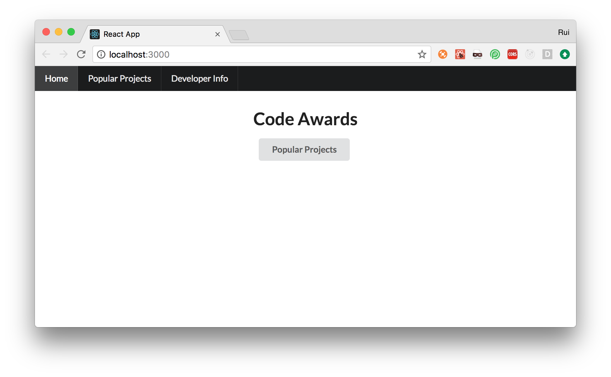